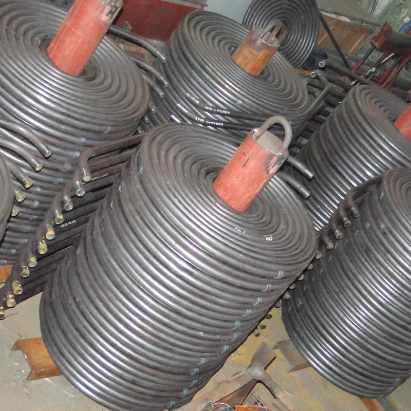
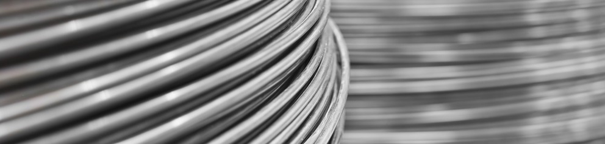
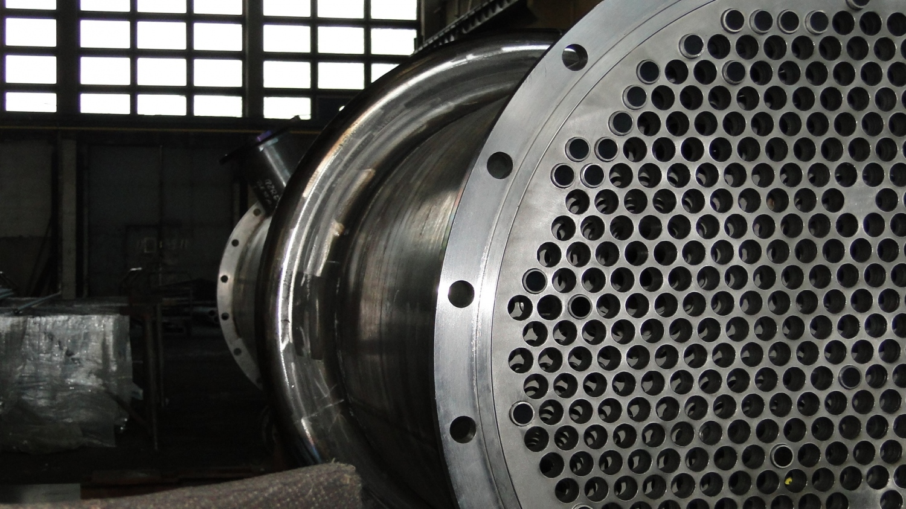
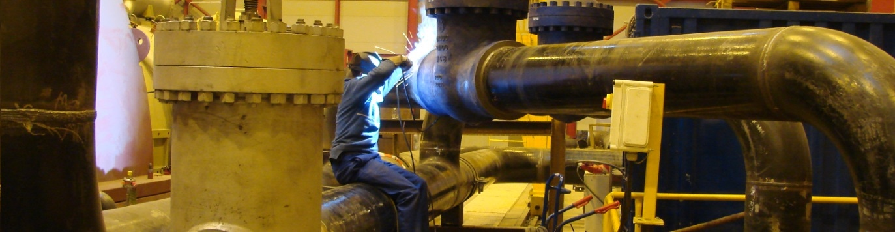
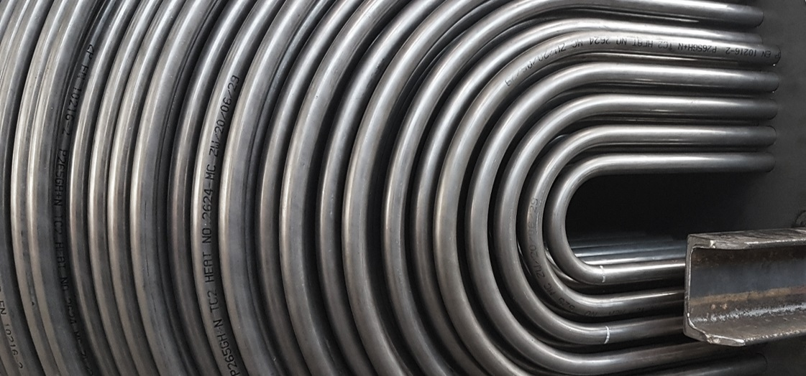
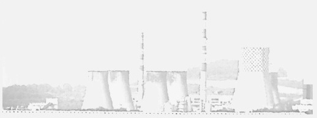
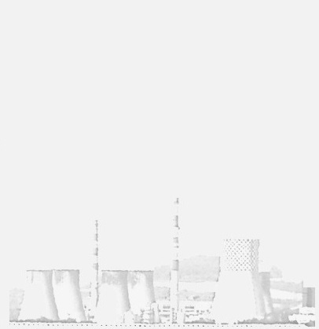

Elementy rurociągów i kształtek
Łuki i kolana hamburskie
Łuki gładkie, łuki gładkie krótkie, łuki segmentowe oraz kolana hamburskie wykonywane pod dokumentację projektu.
Zobacz więcejOferujemy szeroko rozumianą prefabrykację elementów: od gięcia rur, blach, płaskowników i kształtowników po spawanie i kompletację dostaw. Realizujemy projekty według dokumentacji klienta oraz norm PN EN 12952, PN EN 13480 i wytycznych UDT (WUDT-UC).
Pracujemy w oparciu o ISO 9001 i PN-EN ISO 3834-2. Współpracujemy z laboratoriami badań nieniszczących, wykonujemy próby ciśnieniowe, pomiary pocienienia i owalizacji gięć oraz odbiory z udziałem jednostek notyfikowanych.

Wybierz kategorię lub wpisz nazwę produktu. Poniżej prezentujemy ten sam zakres w czytelnym układzie sekcji 1-7.

Łuki gładkie, łuki gładkie krótkie, łuki segmentowe oraz kolana hamburskie wykonywane pod dokumentację projektu.
Zobacz więcej
Trójniki kute, z wyciąganą szyjką oraz skośne spawane dla instalacji energetycznych i przemysłowych.
Zobacz więcej
Redukcje koncentryczne oraz zwężki zwijane symetrycznie, obciskane, toczone i zakuwane.
Zobacz więcej
Wężownice oraz kołnierze stalowe okrągłe płaskie, zaślepiające, szyjkowe i króćce typ A i C.
Zobacz więcej
Zamocowania rurociągów energetycznych oraz podparcia ślizgowe, jednocięgnowe i dwucięgnowe.
Zobacz więcej
Stopy poziome i pionowe, zawieszenia jednosprężynowe i dwusprężynowe oraz elementy podparć.
Zobacz więcej
Wymienniki wykonywane pod parametry procesu. Dla tej grupy rozwijamy rozbudowane case studies: zakres, harmonogram i efekty wdrożenia.
Zobacz więcej
Wężownice realizowane według dokumentacji klienta, z pełnym pakietem jakościowym i możliwością rozszerzenia o badania.
Zobacz więcej
Precyzyjne gięcie blach i płaskowników wykonywane pod wymagania dokumentacji i geometrii montażowej.
Zobacz więcej
Szeroki zakres wymiarów i promieni gięcia kształtowników dla konstrukcji oraz elementów instalacyjnych.
Zobacz więcej
Elementy gięte balustrad, kształty złożone oraz łuki gładkie wykonywane jako efekt procesów gięcia.
Zobacz więcej
Elementy instalacji odkurzaczy przemysłowych oraz dysze zdmuchiwaczy realizowane pod konkretne układy pracy.
Zobacz więcej
Zsypy z wykładzinami z blach trudnościeralnych oraz kompensatory różnych typów do trudnych warunków eksploatacji.
Zobacz więcej
Elementy urządzeń ciśnieniowych oraz osłony termopar z możliwością rozszerzenia o wymagane badania i odbiory.
Zobacz więcej
Wykonanie konstrukcji o różnym poziomie skomplikowania. Ta sekcja może być rozwijana o portfolio realizacji.
Zobacz więcej
Dostawy wyrobów hutniczych pod prefabrykację, montaż i kompletację dostaw dla projektów energetycznych.
Zobacz więcej
Normalia i elementy uzupełniające, w tym śruby i nakrętki, przygotowywane do pełnej kompletacji zamówienia.
Zobacz więcejBrak wyników dla wybranej kategorii i frazy. Zmień filtr lub wpisz inną nazwę.
Prześlij zakres, ilości i termin. Przygotujemy ofertę dopasowaną do projektu.